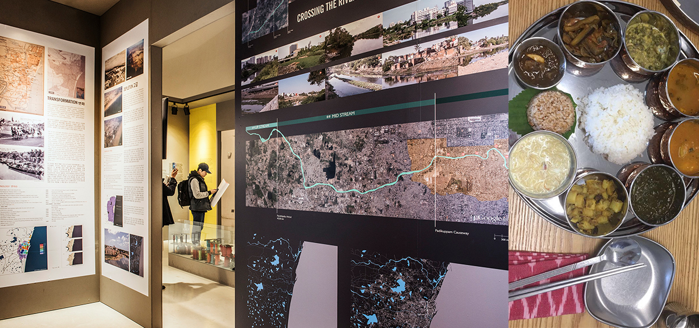

Craft
| Title of performance / project | Partners | Dates |
|---|---|---|
| International Symposium on Natural Dyes | Museum of Natural Dye Arts, Crafts Council of India, Chennai | 22 - 27 September 2008 |
| Earthwise - Natural Dye exhibition | Museum of Natural Dye Arts, Crafts Council of India, Chennai | 23 - 29 November 2009 |
| Natural Dye exhibition | Museum of Natural Dye Arts, Korea | 17 - 26 October 2011 |
| Title of performance / project | Art Form | Partners | Dates |
|---|---|---|---|
| World Crafts Council - International summit - by Ms Bang Youn Ok; Mr Byung Soo Eun | Mosi Weaving | World Crafts Council, Chennai | 7 - 10 October 2012 |
| Emerging Frame - Nature Strokes | Calligraphy and Painting | Studio Palazzo, Chennai | 25 February - 4 March 2013 |
| WaterBodies | Multi-genre | Arts Council Korea (ARKO), Daejin University, Korea | 24 December 2013 - 13 January 2014 |
| From Darkness to Light | Calligraphy | Korea Foundation, Lalit Kala Akademi and the Consulate General of Republic of Korea in Chennai | 14 March 2014 |
| Ggotggozi | Korean floral art | Korea ggotggozi Association | 19 - 20 June 2015 23 - 25 June 2016 28 - 30 June 2017 |
| The Art of Aari | Art of aari embroidery | Thamarai | 5 - 31 July 2017 |
| Patterned Perspectives | Well-cut clothes made from natural and hand-woven fabrics. | Brass Tacks | 5 - 25 August 2017 |
| Sarang-Ga | Sarang-Ga - an exhibition that showcased the work of Na yesim, pansori singing by Young Ja Lee (Aruna) and the traditional Korean tea ceremony. | Insang Song | 5 December 2017 - 15 January 2018 |
| Ggotggozi | Korean floral art | Korea ggotggozi Association | 23 - 26 November 2018 |
| Korean Bojagi at the 1st Indian Quilt Festival | Bojagi | K-Art International Exchange Association, Korea Quilt India Foundation | 25 - 27 January 2019 |
| Korean Bojagi at the 1st Indian Quilt Festival | Bojagi | K-Art International Exchange Association, Korea Quilt India Foundation | 25 - 27 January 2019 |
| International Student Art Festival | K ART International Exchange Association, Busan Tourism Organisation ARPINA, Korea | 03 - 04 August 2019 | |
| Ggotgozzi | Korean floral art exhibition | Korea ggotggozi Association | 04 - 06 March 2020 |
| The Cultural Heritage Series Episode 1: Hanji | Hanji | Korea Craft & Design Foundation, Papermaking in Korea - a flim courtesy, Aimee Lee | 29 August 2020 |
| The Cultural Heritage Series Episode 2: Daemokjang-Traditional Korean Wooden Architecture | The National Intangible Heritage Centre, Republic of Korea | 27 November 2020 | |
| The Cultural Heritage Series- Episode 3: Mosi Weaving | Hanji | Korea Craft & Design Foundation, Papermaking in Korea - a flim courtesy, Aimee Lee | 18 July 2021 |
